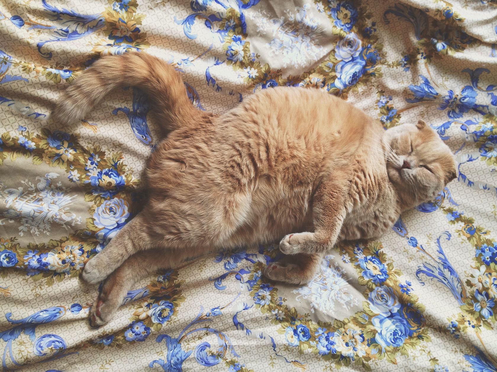
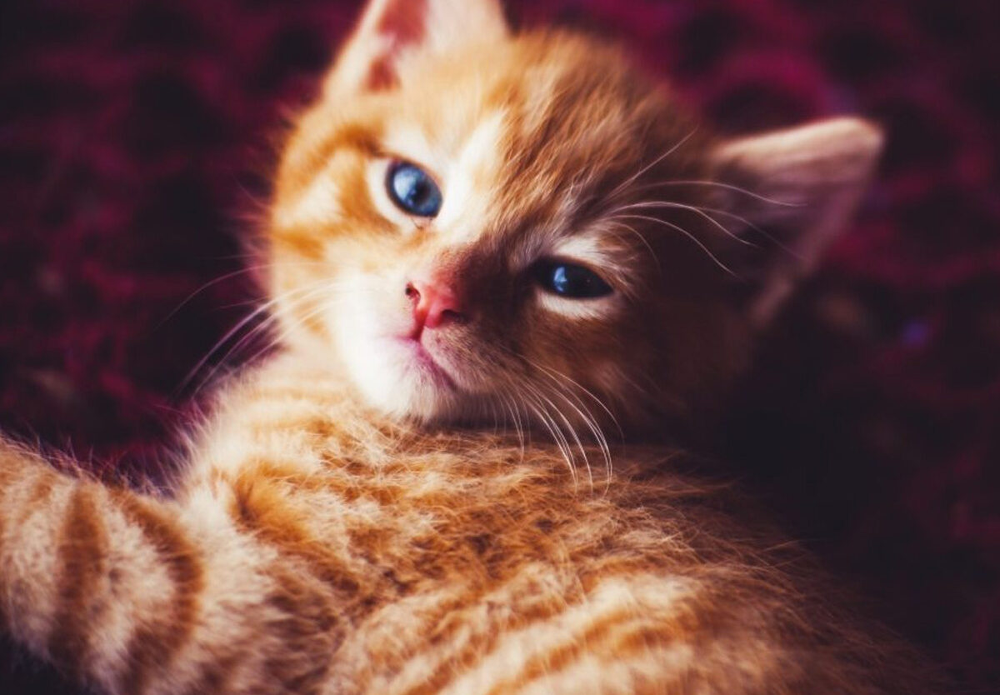
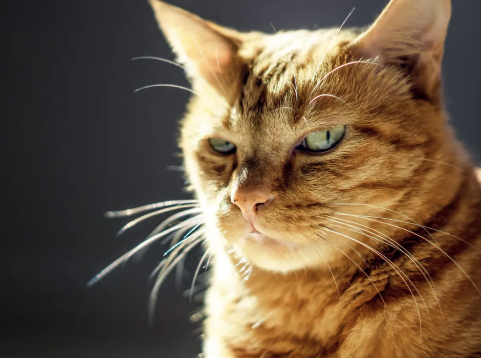

Luke

Luke is a six-year-old white cat; he is very energetic and likes to play fetch. Luke has one brother named Jesse. Luke’s favorite thing to eat are chicken cat treats.
Luke is very badly behaved. He often jumps up on furniture and drinks out of people’s water glasses. He also steals people’s jewelry and hides it in his bed. Luke knows several commands; he can sit, jump, follow, play fetch, and give people his paw.
Photo gallery


Likes
- Luke likes salmon.
Luke likes to play fetch with hair ties.
Luke likes to sleep in laundry baskets.
Tuna

Tuna isn't just any cat – they're a bundle of furry joy with a personality as unique as their name. With their sleek coat resembling the deep blue sea, Tuna is a true beauty to behold. Their eyes, like shimmering gems, reflect the curiosity and affection that they're ready to share with a loving family.
Playtime is Tuna's specialty! Whether it's chasing feather toys, mastering acrobatics with a ball of yarn, or simply exploring the ins and outs of their surroundings, Tuna's enthusiasm is contagious. They'll keep you entertained for hours on end, turning every moment into a delightful adventure.
But Tuna also has a softer side – a side that craves quiet evenings nestled on your lap, purring contentedly as you stroke their velvety fur. Their gentle nature is a reminder that in their heart of hearts, Tuna longs for a forever home where they can shower their human companions with unconditional love.
Photo Gallery

 
Likes
- Playing with her brother, Tako
- Being a gremlin
- Eating treats and being chunky
Milo

Milo is a 6 year old schnoodle. He is super energetic and his favorite game is fetch, which he wants to play all the time — yes, even when it’s pitch black outside or the weather is unideal. Milo is also loving and kind, at least to humans. When he’s around other dogs, he is either jealous of the attention they’re receiving, or ignores them because he has other priorities (chasing a ball)..
Milo is also a pretty smart dog, although he doesn't always use it for good. He can roll over on command, and use his sense of scent to find a hidden treat. But he’s also figured out some loopholes to get what he wants. For example, he has been trained to nudge the bell near the front door to indicate that he needs to be walked. Recently, though, he’s learned that he can just pretend like he wants to go on a walk, but instead lead us around the house to the backyard so he can play. In case it wasn’t clear: Milo loves to play. Although he can be sneaky, my family loves him more than anything.
Photo gallery


Likes
- Playing fetch
Table scraps
Belly rubs
Hachi

Hachi is a 13 year old Akita. He’s a very old boy who likes to play in snow and run laps around our yard. He is super nice and never bites. He is timid but friendly and will always come and greet visitors with a smile and a few barks.
Hachi is a jealous dog. Although shy, he does not like it when other dogs steal attention from him and he will lightly bite them. When Hachi shared the house with another dog, a small poodle, he would constantly bicker with the poodle when it was being loud.
Photo gallery


Likes
- Snow
Being around people
Eating human food
Pappy

Pappy is a 7 year old morkie. Most days he prefers to spend it laying around the house in his various favorite spots. Most of the time you can find him lying in his bed. He loves going with walks, but still hasn’t figured out how to approach other dogs without scaring them off. He loves his family and loves to keep intruders away even for his size.
He also enjoys playing with his favorite basketball. He loves pushing it around, scratching it, or even talking with it. He also loves his little stuffed animal too. Pappy also loves to be scratched and will ask you to keep scratching until he is happy.
Photo gallery


Likes
- Taking naps with his paws in the air
Getting scratches or belly rubs
Any kind of dog treats